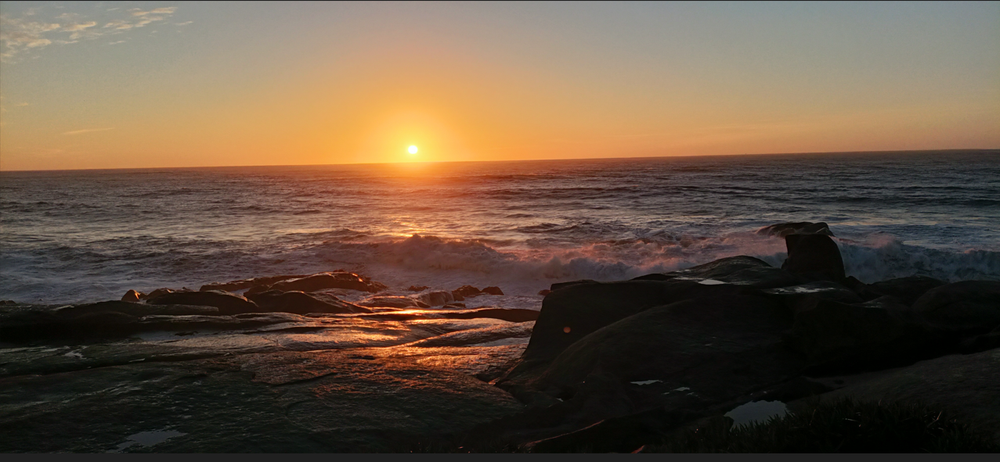
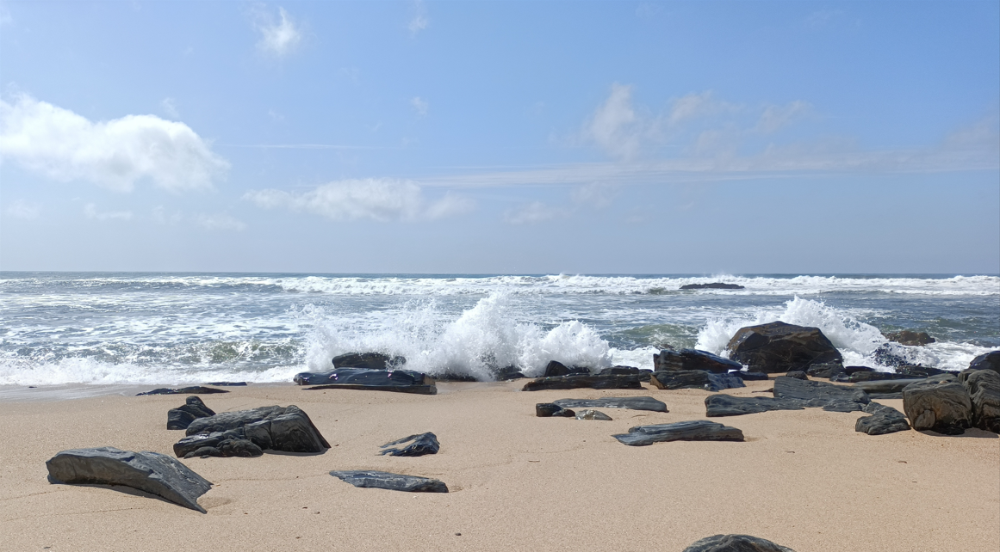
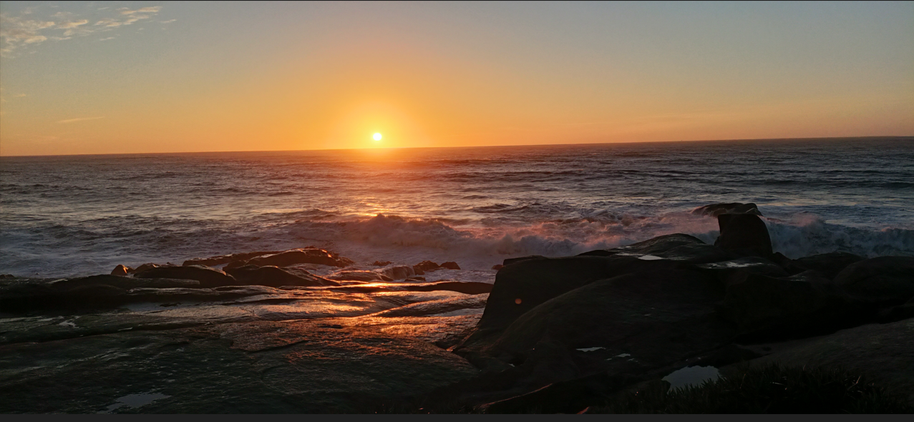
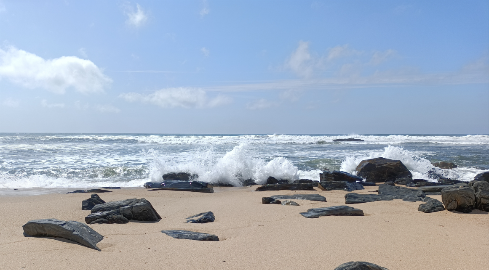

O porquê de dar ao site a alcunha "JP FOTOGRAFIA"?
A alcunha "JP FOTOGRAFIA" foi a escolhida para representar e afirmar a paixão e o entusiasmo que eu tenho pela fotografia. Esta foi criada, com o intuito de demonstrar a minha criatividade, dedicação e esforço na construção dos meus projectos.
Sobre os trabalhos desenvolvidos em Softwares da Adobe
Na página sobre mim, vão ver alguns exemplos de trabalhos realizados em Softwares como: Photoshop e Illustrator.
 


